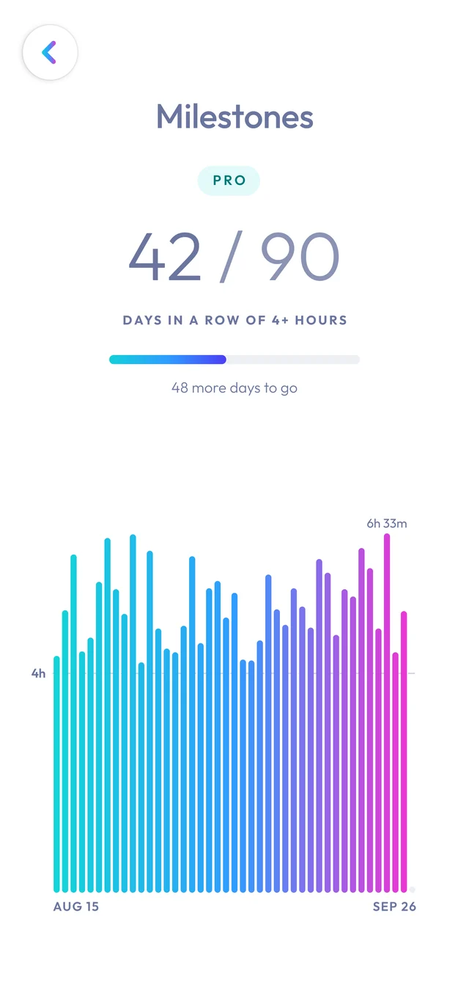

A focus timer that pays you back
Stop procrastinating.
Earn your breaks.
Focus for a while and earn your break time: ten minutes for every twenty-five you work. Then spend it on whatever feels rewarding.
Get it onGoogle Play
If you sit down to something you know will be boring, it creates a small amount of stress.
The right way out is to do the thing: you work, and the relief comes afterwards. It’s how nature works: you get hungry, hunger drives you to hunt, and relief comes when you’ve eaten. Nature doesn’t reward you for intending to hunt.
The easy way out is to pick up the phone and start scrolling. The relief comes first, but the work never does. Do that once and it’s just a Tuesday. Do it for a year and you’ve trained your brain that relief comes without effort.
People might call you lazy. But you don’t believe them — that’s probably why you’re here. You just need to get your brain’s reward system back on track.
How it works
Magic Clock turns it around.
You’re teaching your brain that reward comes after the work — and that sustained focus is something worth doing.
Focus earns break
Every twenty-five minutes of focus earns ten minutes of break, based on Pomodoro.

Break spends it
Scroll Instagram, watch YouTube, check Reddit, play a game, grab a coffee. It’s yours.

Overspend, work it back
Use as much of your break as you like. If you overspend, you simply work it back.
What to expect
Every starting point is normal.
Day one
Some people can focus for 30 minutes straight. Others struggle to get 5 minutes in without reaching for their phone. Both are normal starting points.
Break whenever you like
After an hour, great. After 5 minutes, also fine. Over time, it gets easier.
Take your breaks anyway
Even when you don’t feel you need them. Otherwise you burn out quickly — or end up working with no reward attached, right back where you started.
Don’t ride the wave
It’s like the gym in January: three times the first week, seven the next, then never again. You’ll never build a habit on the excitement wave.
And eventually, you notice it worked.
You spend a sunny Sunday studying for an exam without complaining. You do your tax return without hesitation. You start enjoying exercise. You might still scroll — but now you do it on purpose instead of falling into it.

The rules
Five rules. That’s all.
- 1Earn your breaks.Focus time means focus time and nothing else.
- 2Take your breaks.Even if the day is almost over and you’ve saved up a long break.
- 3Make your breaks enjoyable.Cleaning, cooking and writing emails are not how you spend a break.
- 4Do it 4+ hours a day.You need to invest some time each day to see a real difference.
- 5Don’t break the chain.Do it every day. Consistency is what makes it a habit.
Magic Clock Pro
A one-time upgrade. No subscription.
- Extreme mode. Focus time turns the internet off for every app on your phone. Breaks turn it back on.
- Your own break ratio. Choose how much break your focus earns.
- No ads.
Extreme mode uses Android’s VPN service, entirely on your device. During focus time, Magic Clock takes your phone’s network traffic and drops it. No traffic is read, stored or sent to any server. The VPN is only active during focus time, and only after you switch extreme mode on and allow Android’s VPN request.